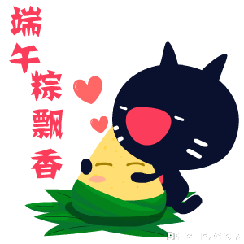
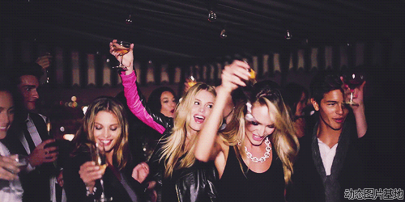
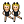
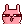
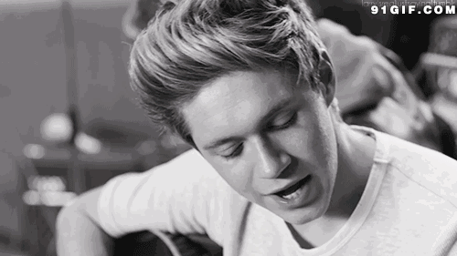
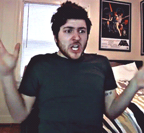
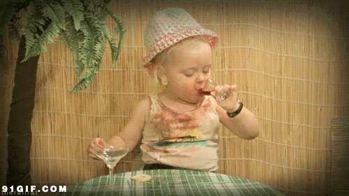

Time: 19:30-21:30, Friday,June 10.
Venue: Room B208, New Main Building, Beihang University.
Table topic part-Let's celebrate together
Toastmaster Channing
Table Topic Master Gastby

首先小编在介里祝大家端午快乐 ！！！
！！！
夹在端午小长假的中间的头马会议还是会如期于本周五举办，为了让大家感受周末的气氛，节日的轻松，假日的欢快和头马的热情，本周五将由首次担任TM 的Channing 和TTM的Gastby为大家主持一场别开生面的会议。
和TTM的Gastby为大家主持一场别开生面的会议。
高考结束，毕设答辩结束，端午放假，作为本周TTM 的小编的心情相信也和各位一样早已paralyzed in summer days in bloom,尽管毕业离别季也许有人会不免悲桑，但海内存知己天涯又如何？那么先不谈以后吧，眼下这么多值得开心的事情难道我们不应该庆祝么？造起来吧！

本周会议是小编离校前的最后一次担任TTM了，所以为了让大家既享受到节日的轻松愉悦也不失去我头马一贯传统，本周TT环节将采取游戏形式来进行，现简要说明游戏规则如下：
游戏规则：
1）游戏开始在座的每位来宾都会被随机发送纸牌一张，游戏各自为战，选手之间不得透露各自纸牌数字大小。
2）选手在知道自己数字的前提下可以选择对主持人提供的题目进行上台回答，该部分和通常会议相同，随后台下观众可以针对演讲者的现场表现给出赞 ，踩和不评价三种态度。其赞将给选手+1分，踩则扣一分，不评价则等同弃权。
，踩和不评价三种态度。其赞将给选手+1分，踩则扣一分，不评价则等同弃权。
3）给出赞的观众们将被演讲嘉宾选出一位作为TA的匹配CP

，同时两人身份数字最终将累加参与挑战，此后被匹配的观众丧失投票权 。若无匹配观众则选手一人参与挑战。每位选手只有在离开舞台前才能亮明自己的身份数字。
。若无匹配观众则选手一人参与挑战。每位选手只有在离开舞台前才能亮明自己的身份数字。4）所有题目答完以后匹配CP们才能亮出身份数字，选手的身份数字与各自匹配CP的数字累加最高组合将获胜，赢取丰厚奖励

。游戏提示：
1.答题有限，想要获胜只能靠自己在场的优秀发挥赢得大家的赞，或者能选中尽量让自己数字累加起来更大的CP，或者是自己成为你认为数字最大的选手的CP。
2.若得分相同则顺序靠前占有优势。
3.最终获胜者只能是一个或者两个人。
4.观众以及选手们没有主持人的命令请不要亮出身份数字。
具体细节会议将再次说明，众多丰富有意思的题目在等着大家，说完了TT环节下面就是我们的备稿演讲环节，相信这次的备稿演讲者们都准备的非常充分来给大家带来精彩的演讲！
Prepared speech part (CC)
Musics (CC-1)
speaker：Francis

Francis莫非对音乐有着执着的爱好？光看题目大家想必肯定都是一头雾水，但小编相信爱笑的男生运气肯定不糊太差，这次Francis会给我们带来他对于音乐的怎样的感受捏？让我们拭耳以待 ~
~
Fear to do my CC-2 (CC-2)
speaker：Eric

新人到头马自然会有些紧张的啦，但我相信我们高大威猛英俊帅气的Eric肯定会想第一次演讲那样淡定自如，所以真噱头也好假恐惧也罢，你都不会让我们失望的对吧 ~
~
At least I try (CC-2)
speaker：Qiqi

只要敢于尝试，THEN?
只要敢于尝试，就能收获幸福
只要敢于尝试，就能获得成功
只要敢于尝试，就能体会不一样的人生？
作为Qiqi而言，她会用什么样的故事来续写这个半命题作文呢？
欲知后事如何且听下回分解 。
。
What is Toastmasters?
Toastmasters International (TI) is a nonprofit educational organization that operates clubs worldwide for thepurpose of helping members improve their communication, public speaking, andleadership skills.
You can find us by the following map of Beihang University.
Any questions call Bowen:17801098588

https://mp.weixin.qq.com/s/fIblxWvKi9y7UjR4ts5xCQ
本页为抢救式本地归档，图文已永久保存。